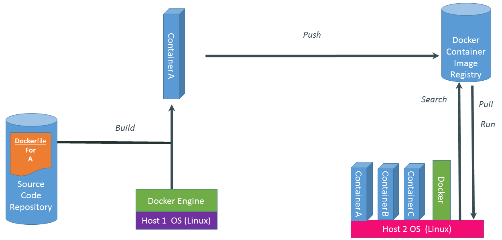

Docker

Il contenuto delle slide è liberamente rubato ispirato dal materiale di Docker, inc!
Dalla sua nascita nel Marzo 2013
- >27.600 commits
- >35.400 github stars
- >1.507 contributors
- >circa mille progetti basati su docker
- UIs, mini-PaaS, Remote Desktop...
- 460K applicazioni Dockerizzate, con una crescita del 3100% negli ultimi due anni
- Memcached, Redis, Node.js, Hadoop...
- Integrazione con Jenkins, Travis, Chef, Puppet, Vagrant and OpenStack
- Centinaia di meetup nel mondo…
- Ebay, Cloudflare, Yandex, and Rackspace utilizzano Docker ogni giorno
Docker... il cuore
- Scritto sulla base del container engine di dotCloud
- Versione originale: python
- Versione attuale: C/Go
- Demone Docker in background
- Gestisce container, immagini, build
- HTTP API
- CLI
- Open Source (GitHub)
Il problema:

Dove lo metto?

Il Trasporto Merci Pre-1960

Stessa situazione

Un container per domarli ...

Docker è un code-container

Elimina il problema alla radice

Prima Reazione

Un problema
Some packages could not be installed. This may mean that you have
requested an impossible situation or if you are using the unstable
distribution that some required packages have not yet been created
or been moved out of Incoming.
The following information may help to resolve the situation:
The following packages have unmet dependencies:
package1 : Depends: package2 (>= 1.8) but 1.7.5-1ubuntu1 is to be installed
E: Unable to correct problems, you have held broken packages.La soluzione
sudo add-apt-repository ppa:package2Sbagliato!
Un container per lo sviluppatore
Dentro il container:
- Il mio codice
- Le mie librerie
- Il mio gestore di pacchetti
- La mia applicazione
- I miei dati
Lo sviluppatore felice
Build once... (finally) run "anywhere"
- Un ambiente isolato, sicuro e scalabile per le vostre applicazioni
- Basta problemi di dipendenze, pacchetti o altri punti di rottura nelle fasi di deply
- Eseguire ogni applicazione nel suo container isolato, tante versioni di librerie o dipendenze
- Automatizzare testing, integration, packaging...tutto si può scrivere in uno script (del VOSTRO linguaggio)
- Per tutti i linguaggi e OS
- Reazioni istantanee di stop/start/snapshot di un servizio, altro che VMs!
- Più tempo per scrivere buon codice!
Un container per l'amministratore
Fuori dal container:
- Logging
- Remote access
- Network configuration
- Monitoring
L'amministratore felice
Configure once... run anything
- Ogni distro/cloud/server
- Un ciclo di vita efficente, replicabile e comodo da gestire
- Codice migliore = meno lavoro di mantenimento
- Eliminare risorse inutili e differenze tra ambienti di dev/test/prod
- Continuous deployment and continuous integration systems
- Un container si adatta ogni momento, le VMs sono per sempre
Ma cos'è un Linux container?

Pro
- Run everywhere
- Non è importante la distribuzione
- Non è importante la versione del kernel
- Run anything
- Se può essere eseguito nell'host, può girare nel container
- Se può essere eseguito sul kernel Linux, si può!
Dall'alto al basso
- High level: a lightweight VM
- Proprio process space
- Propria network interface
- È anche root
- Il suo /sbin/init (diverso dell'host)
- <<machine container>>
- Low level: chroot on steroids
- Può anche non avere il suo /sbin/init
- Container = isolated processes
- Condivide il kernel dell'host
- No device emulation
- <<application container>>
Containers systems
I soliti noti
- Linux
- OpenVZ
- LXC
- Libcontainer (Docker)
- Others
- Jail (FreeBSD)
- Zone (Solaris)
- App-V (Microsoft .NET)
Performance
- I processi sono isolati, ma vengono eseguiti sull'host
- CPU performance = native performance
- MEM performance = perdita di una micro % della performance rispetto all'host
- Network performance = native performance, ma dipendono dalla distribuzione dei container
VMs vs Containers

Come funziona un container Linux
- Namespace: isolamento dei processi
- PID
- User
- Network
- Cgroups: Resources management
- Copy-on-write Filesystem (AUFS)
- Linux Capabilities
- SElinux/Apparmor (stopdisablingselinux.com)
- Read-only mount point
(/sys /proc/sys /proc/sysrq-trigger /proc/irq /proc/bus)
Isolation with namespace
- pid
- mnt
- net
- uts
- ipc
- user
Isolation with cgroups
- memory
- cpu
- blkio
- devices
Copy-on-write storage
- union filesystem
(AUFS, overlayfs) - snapshot filesystem
(BTRFS, ZFS) - copy-on-write block devices
(snapshot con LVM o device-mapper)
Containers do not contain
"Docker is about running random code downloaded from the Internet and running it as root."
- Eseguire processi in un container NON è sicuro come in una VMs/KVM
- Scaricare immagini Docker casuali e lanciarle È COME eseguire codice casuale.
Best Practices
- Drop privileges
- Eseguire i servizi come non-root user
- Trattare root nel container come root nell'host
- Gestire le linux capabilities
(CAP_SYS_ADMIN) - Non eseguire codice inutile nel container
- SElinux/Apparmor
(http://stopdisablingselinux.com)Immagini Docker

Scrivere da run/commit
- docker run ubuntu bash
- apt-get install pacchetto1 lib1
- docker commit <containerid> >imagename>
- docker run <imagename> bash
- git clone... \ pip install\ etc
- docker commit <containerid> <imagename>
- docker commit <containerid> <imagename>
- docker tag <imagename> <user/image>
- docker push <user/image>
Scrivere un Dockerfile
FROM debian:wheezy
RUN apt-get update
RUN apt-get -y install ruby ruby-dev build-essential git libopenssl-ruby libxslt-dev libxml2-dev
RUN useradd banana -u 1000 -s /bin/bash --no-create-home
RUN gem install -n /usr/bin bundler
RUN gem install -n /usr/bin rake
WORKDIR /home/vidarh/
ENV HOME /home/vidarh
VOLUME ["/home"]
USER banana
EXPOSE 8080
Usare Docker Hub
Vantaggi:
- Registro remoto per le immagini
- Immagini ufficiali di docker/distro/app
- Download sicuro
- GitHub Account
- Comodo punto di partenza
Applicazioni
Lanciare un container
Docker run...
- Singolo comando
- Container in background
- Gestione dei volumi
- Velocissimo
Orchestration
- Linking container
container-a:container-b - Provisioning
salt, puppet, cloud ide, etc - Service discovery
- Dns/hostname
Ecosystem Support
- Operating systems
- Virtually any distribution with a 2.6.32+ kernel
- CoreOS—Small core OS purpose built with Docker
- OpenStack
- Docker integration into NOVA (& compatibility with Glance, Horizon, etc.) accepted for Havana release
- Private PaaS
- OpenShift, Solum (Rackspace, OpenStack), Other TBA
- Public PaaS
- Deis, Voxoz, Cocaine (Yandex), Baidu PaaS
- Public IaaS
- Native support in Rackspace, Digital Ocean,+++
- AMI (or equivalent) available for AWS & other
- DevOps Tools
- Integrations with Chef, Puppet, Jenkins, Travis, Salt, Ansible +++
- Orchestration tools
- Kubernetes, Mesos, Heat, ++
- Shipyard & others purpose built for Docker
- Applications
- 1000’s of Dockerized applications available at index.docker.io
Ecosystem (a colori!)

Senza dimenticare
Windows server...

Want to Learn More?
- www.docker.io
- Documentation
- Getting started (tutorial, installation, guide, etc)
- Introductory whitepaper
- Github: dotcloud/docker
- IRC: freenode #docker
- Google Group: docker-user
- Twitter: @docker
- Meetups: www.docker.io/meetups